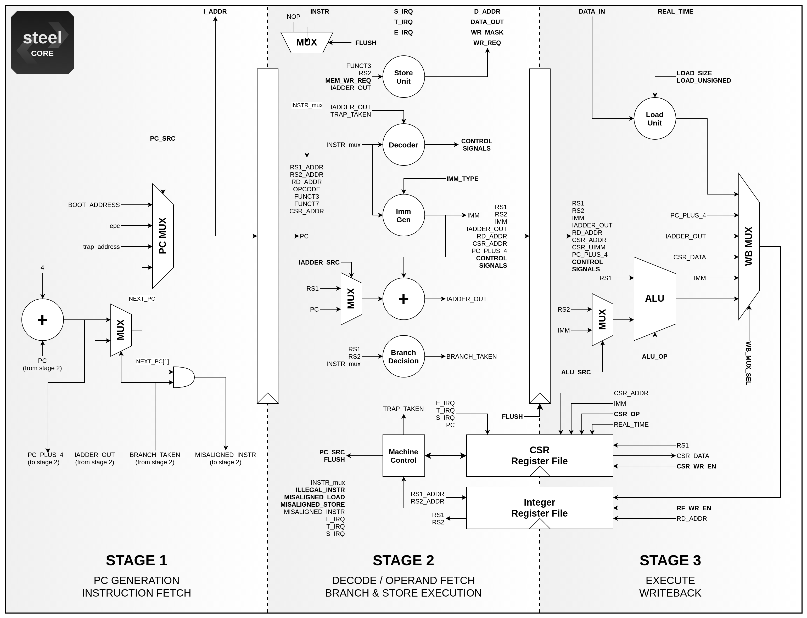
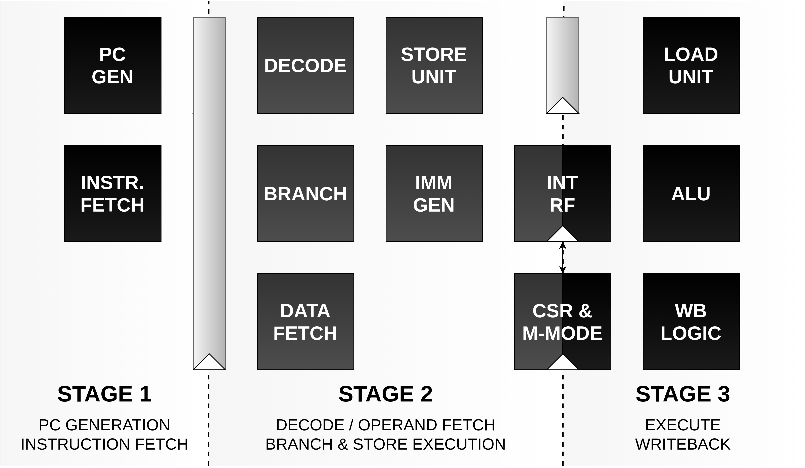

Steel has 3 pipeline stages, a single execution thread and issues one instruction per clock cycle. Therefore, all instructions are executed in program order. Its pipeline is plain simple, divided into fetch, decode, and execution stages. The reduced number of pipeline stages eliminates the need for branch predictors and other advanced microarchitectural units, like data hazard detectors and forwarding units. Fig. 1 shows the Steel microarchitecture in register-transfer level (RTL). For more details read the section Implementation details.
The tasks performed by each pipeline stage are presented in Fig. 2. In the first stage, the core generates the program counter and fetches instructions from memory. In the second, the instructions are decoded and the control signals for all units are generated. Branches, jumps and stores are executed in advance in this stage, which also generates the immediates and fetches the data from memory for load instructions. The last stage executes all other instructions and writes back the results in the register file.
 Fig. 1: Steel Core microarchitecture
 Fig. 2: Steel Core pipeline overview